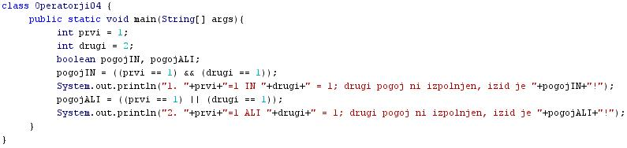
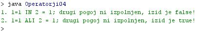

POGOJNI OPERATORJI
- S pomoèjo pogojnih operatorjev preverjamo izpolnjevanje izbranih postavljenih pogojev v programu.
- Pogojni operatorji predstavljajo operacije, ki jih izvajamo na logiènih spremenljivkah.
- Logiène spremenljivke lahko prevzamejo vrednosti "true" (resnièno, pravilno, 1) ali pa "false" (neresnièno, napaèno, 0).
- Logiène spremenljivke so torej spremenljivke podatkovnega tipa "boolean".
- Logièni operatorji:
- Logièni IN - "&&".
- Logièni ALI - "||".
- Skrajšani ukaz "if-then-else" - "?". Ukaz "if-then-else" bomo spoznali kasneje. Tam si bomo ogledali podrobneje tudi skrajšani ukaz "?".
- Primerjalni operator tipov - "instanceof".
- V tej uèni enoti si bomo podrobneje ogledali pogojna operatorja "Logièni IN" in "Logièni ALI".
- Pogojni operator "Logièni IN"
- Rezultat operacije "Logièni IN" bo enak "true" le tedaj, ko bosta oba pogoja oziroma operanda, ki ju povezuje operator "&&", imela vrednost "true".
- Èe katerikoli od obeh operandov ne bo imel vrednosti "true", torej bo imel "false", bo tudi vrednost rezultata operacije "Logièni IN" enaka "false".
- Pogojni operator "Logièni ALI"
- Rezultat operacije "Logièni ALI" bo enak "true" tedaj, ko bo vsaj eden od pogojev oziroma operandov, ki ju povezuje operator "||", imela vrednost "true".
- Èe bosta oba operanda imela vrednost "false", bo tudi vrednost rezultata operacije "Logièni ALI" enaka "false".
- Znak "|", ki sestavlja operator "logièni ALI", vtipkamo tako, da držimo pritisnjeno tipko "Alt Gr" in hkrati pritisnemo tipko "W".
VAJA 15:
- V okolju za pisanje izvorne kode v jeziku Java, za prevajanje in za interaktivno delo zapiši zgornji program "Operatorji04". Pomagaj si s sliko.
- Kodo lahko tudi kopiraš iz te datoteke in jo prilepiš v okolje, v katerem pišeš programèke. Pozor: koda, ki jo boš kopiral/a, vsebuje eno, dve, tri ali štiri napake. Èe želiš, da bo program deloval, moraš napake odkriti in jih odpraviti.
- Izvorno kodo shrani pod imenom "ImePriimek15.java". ImePriimek je seveda tvoje lastno ime in priimek.
- Datoteko "ImePriimek15.java" prevedi.
- Prevedeno datoteko zaženi, preveri rezultat v interaktivnem oknu in poklièi profesorja, da vidi rezultat.
1. Vprašanja:
1. Kakšna je naloga pogojnih operatorjev?
2. Zapiši pogojne operatorje in njihove simbole.
3. Kdaj je rezultat operacije "logièni IN" enak "true" ("resnièno", 1)?
4. Kdaj je rezultat operacije "logièni ALI" enak "false" ("neresnièno", 0)?
5. Koliko ukazov za izpis vsebuje programèek v tej uèni enoti?
6. Zapiši oba operanda, ki ju povezuje operator za "logièni IN".
7. Ali sta trditvi v obeh operandih, ki su ju zapisal/a, resnièni.
8. Kako smo poimenovali logièno spremeljivko, ki je rezultat operacije "logièni IN" v primeru te uène enote?
9. Kakšna je vrednost rezultata operacije "logièni IN" na teh dveh operandih?
10. Kakšna je vrednost rezultata operacije "logièni ALI" na teh dveh operandih?
11. Kako smo poimenovali logièno spremeljivko, ki je rezultat operacije "logièni ALI" v primeru te uène enote?
2. Zapiši od ene do pet kljuènih besed, ki povzemajo vsebino te uène enote.
3. Povezave do dodatnih informacij.
Gradiva na spletnih straneh fakultete za matematiko in fiziko v Ljubljani.
Spletni priroènik proizvajalca programskega okolja Java. To je podjetje Sun.
|